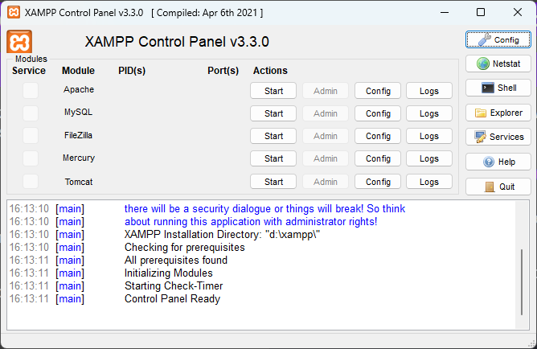
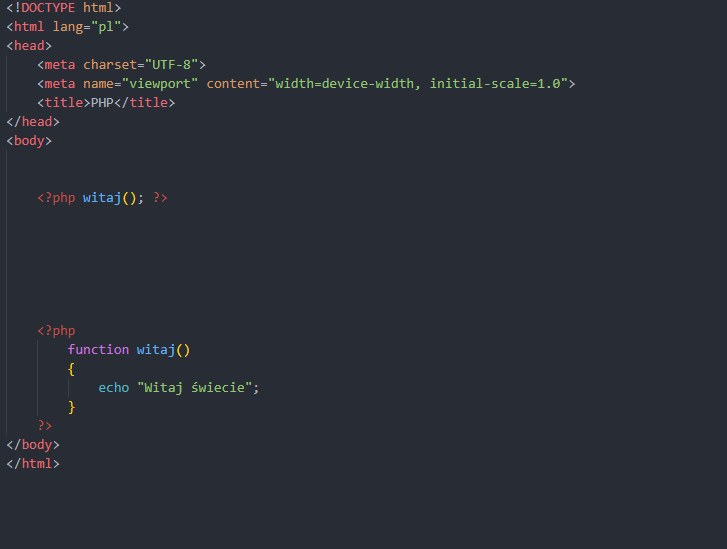
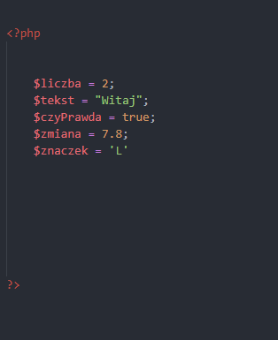
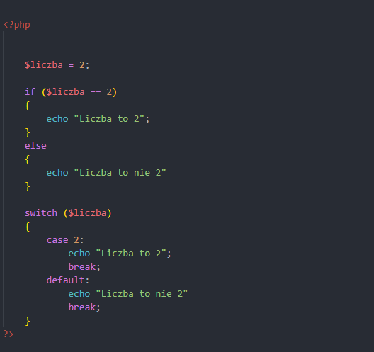
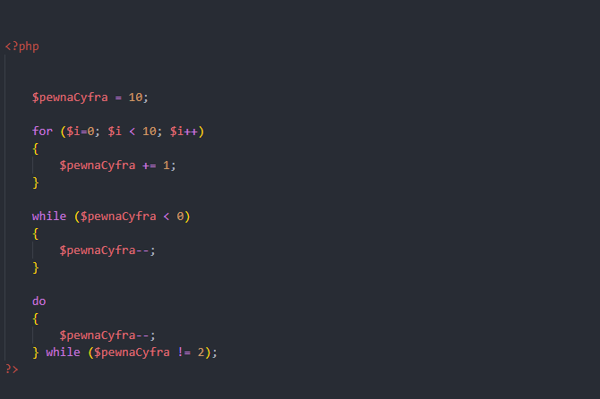
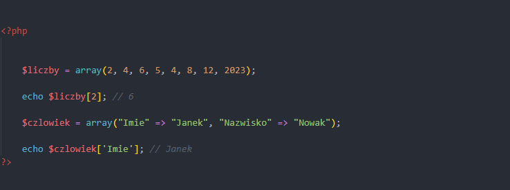
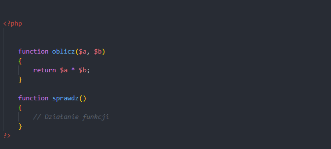
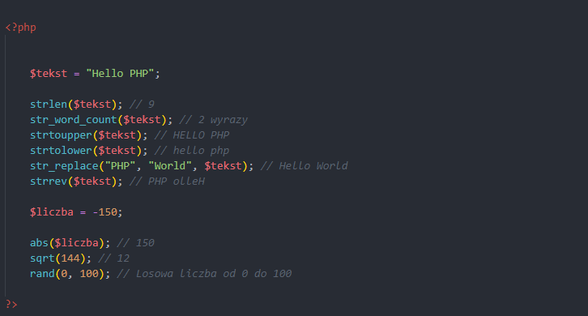
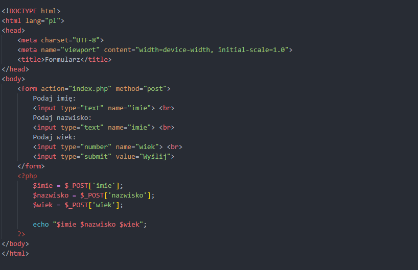
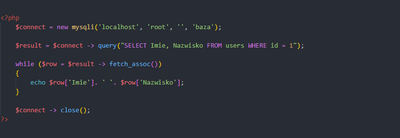

Język PHP jest częścią tzw. back-end'u, czyli działań wykonywanych po stronie serwera. Język pozwala na połączenie części aplikacji z bazami danych poprzez różne potrzebne biblioteki, które są omówione w dalszej części.
Obsługa XAMPP
Pakiet XAMPP jest odpowiedzią na to, jak sprawić, aby nasz komputer stał się tzw. serwerem do hostowania strony. W tym pakiecie, zawarte są dwa ważne składniki: Apache i MySQL. Poza nimi, jest wiele innych, ale do tworzenia aplikacji wystarczą nam te dwa moduły.
Aby dostać się do panelu kontrolnego, należy po uruchomieniu usługi Apache i MySQL, w przeglądarce wejść na adres tzw. pętli zwrotnej, czyli 127.0.0.1 albo localhost, który odwołuje się do lokalnego komputera.

Umieszczanie na stronie
W przeciwieństwie do JS, język PHP nie może być umieszczany w oddzielnym pliku w całości. Owszem, niektóre pliki np. dotyczące połączenia z bazą mogą być podłączone, lecz chodzi mi tutaj o większe skrypty.
Kiedy strona używa języka PHP, plik ze stroną musi mieć rozszerzenie .php, ponadto aby język był dobrze interpretowany (czyli przez serwer) -> należy stronę uruchamiać właśnie przez serwer, czyli w przypadku XAMPP'a, pliki ze stroną muszą być umieszczone w folderze htdocs w miejscu instalacji programu XAMPP.
Skrypty najlepiej umieszczać przed zamknięciem znacznika body. Natomiast w przypadku implementacji ciasteczek (cookie), należy część tego skryptu umieścić przed znacznikiem html. Skrypt w php umieszczamy między znacznikami <?php i ?>. Nie ma określonej ilości takich znaczników, więc można pod koniec strony umieścić jeden długi skrypt, zaś w odpowiednich miejscach na stronie wywoływać poszczególne funkcje.
Każda linia skryptu musi kończyć się średnikiem ; lub w przypadku instrukcji warunkowych, pętli, funkcji: nawiasem klamrowym { }

Deklaracja zmiennych i rodzaje danych
W PHP, zmienne deklaruje się poprzez jeden znak: $. Jeśli chodzi o nazywanie, sytuacja podobna do tego, co było napisane w JS.
W kwestii rodzajów danych, analogicznie, jak w JS

Instrukcje warunkowe
Teoretyczna część znajduje się w części JS w sekcji Instrukcji warunkowych. Poniżej zaś, jak zapisuje się to w PHP

Pętle
Teoretyczna część znajduje się w części JS w sekcji Pętle. Poniżej zaś, jak zapisuje się to w PHP

Tablice
Teoretyczna część znajduje się w części JS w sekcji Tablic. Poniżej zaś, jak zapisuje się to w PHP
Jeśli chodzi o tablice, podobnie jak w JS z tą różnicą, że posiadają one tablice asocjacyjne. O więcej informacji, warto przeczytać tutaj.

Funkcje
Teoretyczna część znajduje się w części JS w sekcji Funkcji. Poniżej zaś, jak zapisuje się to w PHP

Funkcje matematyczne i znakowe
Funkcje znakowe:
- strlen() – Zwraca długość liczby znaków w wskazanym ciągu znaków
- str_word_count() – Zwraca ilość wyrazów w wskazanym ciągu znaków
- strtoupper() – Zwraca ciąg znaków w postaci dużych liter
- strtolower() – Zwraca ciąg znaków w postaci małych liter
- str_replace() – Umożliwia zamianę jednego ciągu znaków na drugi, a w trzecim argumencie podany jest ciąg, w którym ma nastąpić zmiana
- strrev() – Odwraca podany ciąg znaków
- trim() – Zwraca podany ciąg znaków bez tzw. białych spacji (na początku i końcu ciągu znaków)
- explode() – Przemienia podany ciąg znaków na tablicę
- substr() – Zwraca konkretną liczbę znaków z podanego ciągu znaków
Funkcje matematyczne
- min() – Zwraca minimalną wartość z podanych liczb
- max() – Zwraca maksymalną wartość z podanych liczb
- abs() – Zwraca wartość absolutną podanej liczby
- sqrt() – Zwraca pierwiastek kwadratowy danej liczby
- round() – Zaokrągla podaną liczbę do liczby całkowitej
- rand() – Generuje losową liczbę z przedziału

Obsługa formularzy
Język ten służy zazwyczaj do obsługi danych z formularza. W tym celu, używamy specjalnej tablicy super globalnej $_POST lub $_GET, w zależności od metody przesyłania danych zapisanej w znaczniku form w atrybucie method w HTML'u. My zwykle używamy metody szyfrowanej, czyli POST.
Aby dane zostały prawidłowo odczytane, należy pamiętać, aby:
- Konkretne pole w formularzu miało swoją nazwę (name)
- Nazwy tej używamy w skrypcie PHP, w tej tablicy $_POST do odczytu danych
- Najlepiej, aby nazywać pola tak, jak w przypadku zmiennych, czyli żeby odzwierciedlały przechowywane w sobie dane

Obsługa Baz Danych
Jak wspomniałem, język ten umożliwia współpracę z bazą danych poprzez bibliotekę mysqli. Sposób zapisu jej możemy uzyskać w dwóch wariantach:
- Proceduralnie, czyli np. mysqli_connect() LUB
- Obiektowo, czyli np. new mysqli()
W przykładach, używać będę zapisu obiektowego, zaś pod tym linkiem można rozszerzyć informacje odnośnie całej tej biblioteki.
Do połączenia się z bazą użyjemy ww. zapisów, a informacje dotyczące połączenia najlepiej zapisać do zmiennej (np. $connect). Kolejność podawanych danych to: Adres serwera, Użytkownik, Hasło, Nazwa bazy
W celu wykonania zapytania, należy posłużyć się słowem query(" "), gdzie treść zapytania do bazy wpisujemy pomiędzy apostrofami
Zawsze, każde połącznie z bazą musi być zamknięte słowem: close()
Jeżeli chcemy wyświetlić dane pobrane zapytaniem, należy użyć pętli while oraz metody fetch_assoc(), która cały wynik zapytania odpowiednio poukłada do tablicy asocjacyjnej, gdzie nazwa komórki to nazwa kolumny z bazy. Jest to najwygodniejszy sposób na wyświetlanie danych.
Warto wspomnieć o funkcji num_rows(), która zwraca ilość rekordów z zadanego zapytania.
Domyślnie, na egzaminie łączenie z bazą będzie odbywać się poprzez adres localhost, użytkownika root, hasła (jego braku) oraz wskazanej przez arkusz nazwy bazy
Przy zapisach obiektowych, warto zauważyć, że wywoływanie odpowiednich funkcji wykonuje się poprzez znak tzw. dzidy ->
